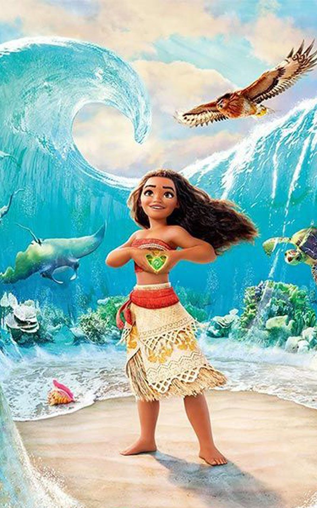

- Nama : Moana Hasinoban
- Minat : Politik
- Bakat : Menyanyi, menyelam, menari
- Hobby : Menjelajah lautan, bernyanyi
- Role Model : Maudy Ayunda
Alasan : Maudy memiliki pandangan sosial yang begitu luas, cara berpikir yang logis, serta mampu membagi waktu ditengah padatnya kegiatan tanpa melupakan tugas pokoknya dalam penempuh jenjang pendidikan.
- Motivasi : Petualangan dan pengalaman akan selalu mempunyai makna berharga yang tak tergantikan nilainya.